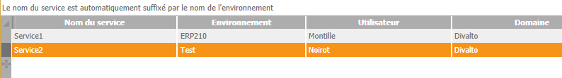

Un ou plusieurs services permettent d’automatiser la synchronisation des utilisateurs de l'annuaire LDAP avec ceux de l'ERP :
La configuration des services s'obtient depuis la console d'administration LDAP en cliquant sur le bouton Services.
Le tableau affiché permet de définir et paramétrer un ou plusieurs services :

Il est obligatoire de renseigner le domaine.
L’utilisateur exécutant un service de synchronisation doit obligatoirement être dans le domaine et disposer du droit HCO.
La périodicité des synchronisations est paramétrable (option Fréquence de rafraîchissement dans les paramètres généraux de la console d'administration).
Un service de synchronisation lit l'annuaire LDAP à la périodicité définie en appliquant le filtrage de base.
Pour chaque entrée de l’annuaire, il vérifie s'il s'agit :
D'une création d'un nouvel utilisateur.
D'une modification des propriétés d'un utilisateur.
D'une modification du modèle d'un utilisateur.
D'une suppression d'un utilisateur.
Remarque : Un utilisateur supprimé dans l'annuaire n'est pas supprimé dans l'ERP mais simplement désactivé.
Les événements et anomalies constatés lors des synchronisations sont journalisés dans un livre de bord (un fichier par environnement nommé SynchroLdap_NomEnvironnement.log et stocké dans le répertoire /Divalto/DivaltoLog).
Le service signale notamment les événements suivants :
Un utilisateur a été créé dans l’ERP avec le modèle suivant.
Un utilisateur a été désactivé dans l’ERP :
Suite à sa suppression dans l’annuaire LDAP.
Car il n’est plus membre d’aucun groupe.
Des propriétés d’un utilisateur ont été modifiées.
Le service détecte notamment les anomalies suivantes :
Un utilisateur LDAP correspond à plusieurs modèles ou ne correspond à aucun modèle de l’ERP.
Un utilisateur LDAP existe déjà dans l’ERP :
Si cet utilisateur est actif, il est modifié pour utiliser les propriétés du modèle.
S'il n'est pas actif, l’utilisateur n’est pas modifié.
Un compte-rendu peut être notifié par courriel à un ou plusieurs administrateurs.